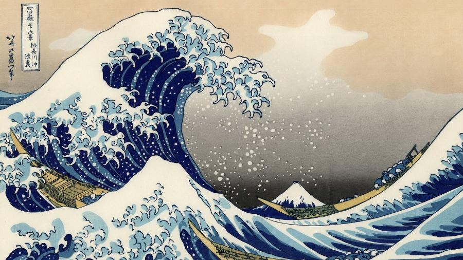

Elementos de Citação e Referência no HTML
Utilizando o blockquote:
For 60 years, WWF has worked to help people and nature thrive. As the world's leading conservation organization, WWF works in nearly 100 countries. At every level, we collaborate with people around the world to develop and deliver innovative solutions that protect communities, wildlife, and the places in which they live.
Utilizando o elemento q:
O professor disse: Somente a dor coletiva gera união.
Utilizando o elemento abbr
A OMS foi fundada em 1948
Utilizando o elemento address:
Escrito por Vitoria
Acesse o meu lenkedIn:
www.linkedin.com/in/vitoriaramos05
Rua: sei lá, Número: 777,
Bairro: Onde o Judas perdeu as botas, Cidade: São Paulo
Utilizando o elemento cite

A Grande Onda de Kanagawa Por Katsushika Hokusai.
Utilizando o elemento bdo:
O amor é o carinho, espinho, que não se vê em cada flor.